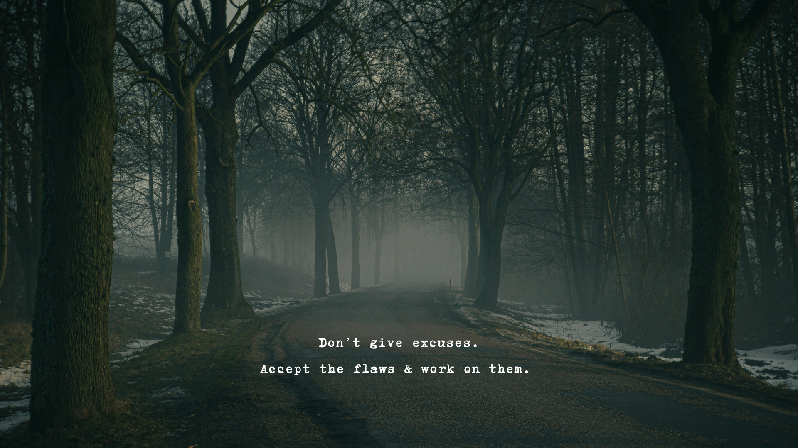

Blogger 1:
The rapid evolution of artificial intelligence is no longer just a plot device for science fiction; it’s a tangible reality reshaping how we live and work. From predictive algorithms that curate our morning news feeds to sophisticated machine learning models diagnosing complex medical conditions, AI has quietly woven itself into the fabric of our daily routines. As developers continue to push the boundaries of neural networks, the conversation is shifting from what technology can do, to how we can ethically integrate these powerful tools to augment human creativity rather than replace it.

Tech Industry relevencyBlogger 2:
There is a profound kind of magic in waking up in a city where you don't speak the language. The air smells different—a blend of unfamiliar street food, ancient stone, and morning rain—and every street corner feels like an invitation to get delightfully lost. Backpacking through the cobblestone alleys of Eastern Europe isn't just about checking historical landmarks off a bucket list; it’s about the quiet moments spent sipping dark espresso in a bustling piazza, watching the world go by, and realizing how vast and beautifully diverse the human experience truly is.
Travelling SiteBlogger 3:
In our hyper-connected, always-on society, the simple act of doing nothing has become a radical form of self-care. Mindfulness isn't about emptying your brain of all thoughts—a nearly impossible feat—but rather about observing those thoughts without judgment. Taking just ten minutes each morning to sit in silence, focusing solely on the rhythm of your breath, can dramatically lower cortisol levels and rewire your brain for resilience. It is in these quiet spaces between our endless to-do lists that we actually find the clarity needed to tackle the day.
Health and Medical careBlogger 4:
Sourdough baking is less of a culinary technique and more of an exercise in patience and microbiology. Unlike commercial yeast that forces dough to rise in a matter of hours, a wild yeast starter requires daily feeding, precise temperature control, and an intuitive understanding of fermentation. The reward for this laborious process is a loaf of bread that sings when you take it out of the oven—a deeply blistered, crackling crust giving way to an airy, complex crumb that carries the unique, tangy flavor profile of the very kitchen it was baked in.
culinary n foodBlogger 5:
The traditional nine-to-five office model has been irreversibly fractured, making way for a new era of asynchronous remote work. Companies are discovering that productivity isn't measured by hours logged at a desk, but by the quality of output and the autonomy granted to their teams. By embracing flexible schedules and digital collaboration tools, organizations are not only reducing overhead costs but also tapping into a truly global talent pool. The future of work is undeniably decentralized, prioritizing work-life integration over rigid corporate presence.
Business n remote work